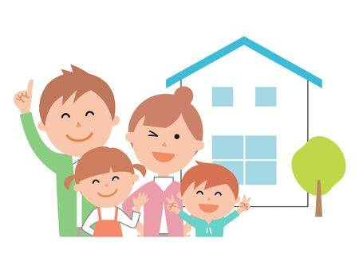
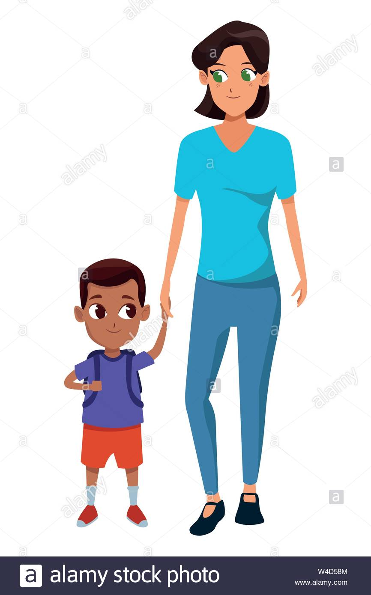
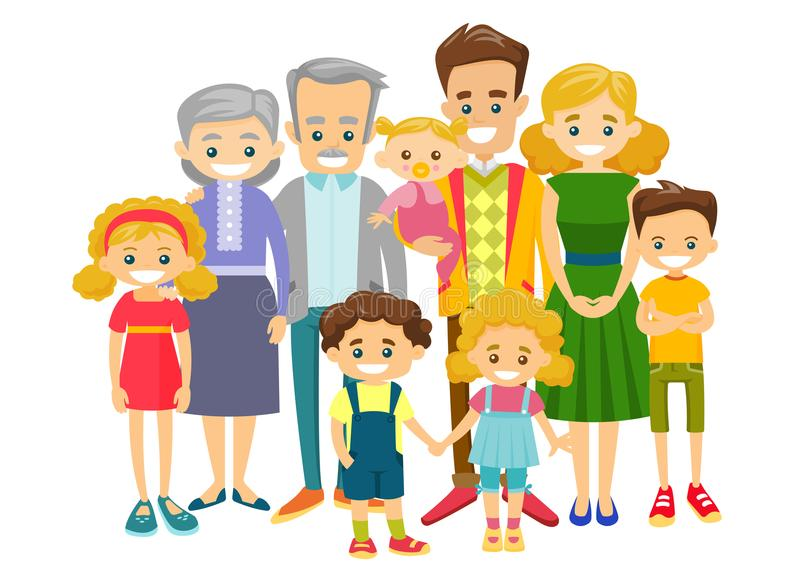
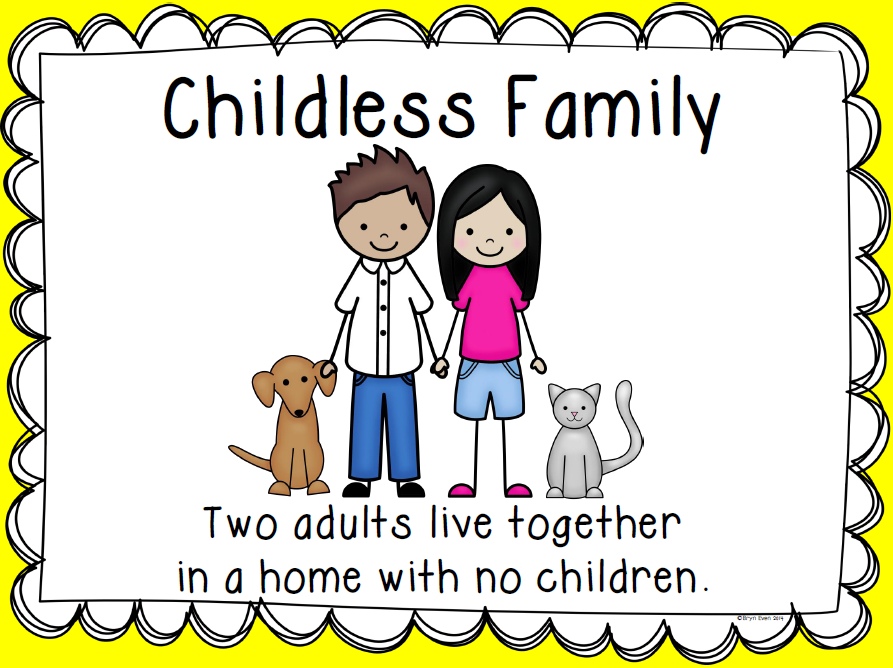
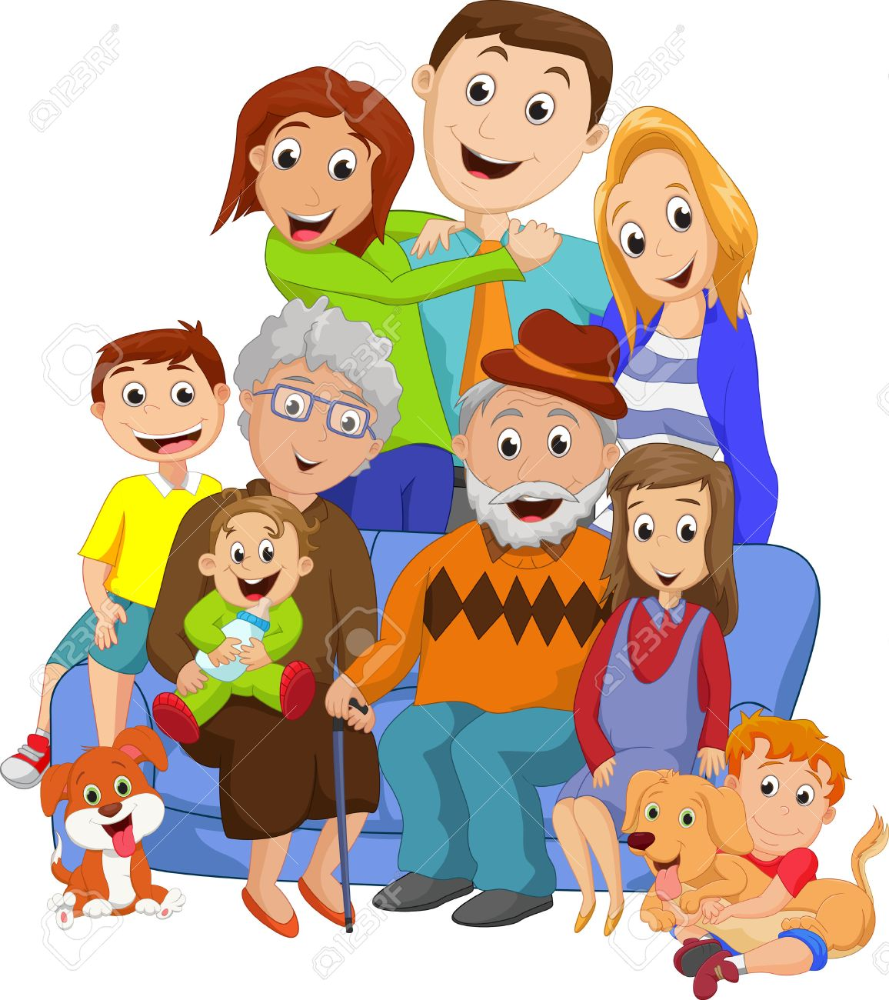
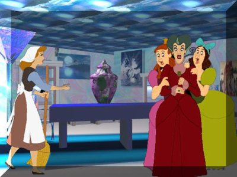

Family is defined as a specific group of people that may be made up of partners, children, parents, aunts, uncles, cousins and grandparents. An example of a family is a set of parents living with their children. The definition of family is the group of people who share common ancestors
There are various types of family...Like:
A nuclear family, elementary family or conjugal family is a family group consisting of two parents and their children (one or more). It is in contrast to a single-parent family, the larger extended family, or a family with more than two parents. Nuclear families typically center on a married couple which may have any number of children. There are differences in definition among observers. Some definitions allow only biological children that are full-blood siblings and consider adopted or half and step siblings a part of the immediate family, but others allow for a stepparent and any mix of dependent children including stepchildren and adopted children. Some sociologists and anthropologists consider the nuclear family as the most basic form of social organization.
A single parent is a person who lives with a child or children and who does not have a spouse or live-in partner. Reasons for becoming a single parent include divorce, break-up, abandonment, death of the other parent, childbirth by a single person or single-person adoption. A single parent family is a family with children that is headed by a single parent.
Click for the picture of Nuclear Family
click for the picture of Single Parent Family
An extended family is a family that extends beyond the nuclear family, consisting of parents like father, mother, and their children, aunts, uncles, grandparents, and cousins, all living in the same household. Particular forms include the stem and joint families.
Childlessness is the state of not having children. Childlessness may have personal, social or political significance. Childlessness, which may be by choice or circumstance, is distinguished from voluntary childlessness and being "childfree", which is voluntarily having no children, and from antinatalism, where in childlessness is promoted.
Click for the picture of Extended family
Click for the picture of childless family
A grandparent family is a family with grandchildren and no parents present in the intervening generation.
A step family, blended family, bonus family, or instafamily is a family where at least one parent has children that are not biologically or adoptive related to the other spouse or partner. Either parent, or all, may have children from previous relationships. Children in a stepfamily may live with one biological or adoptive parent, or they may live with each biological or adoptive parent for a period of time.[1] In addition, visitation rights mean that children in stepfamilies often have contact with both biological parents, even if they permanently live with only one.
Click for the picture of Grandparent Family
Click for the picture of Step Family
Here are some informations about some family...
Join our group.For joining Our group Please fill this form.